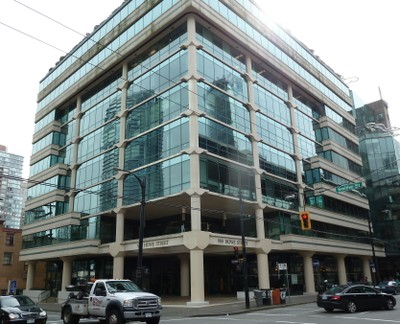
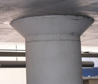
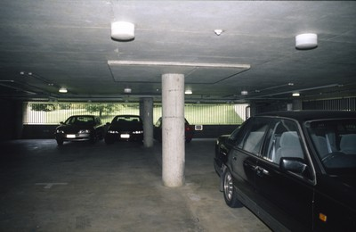
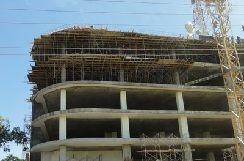
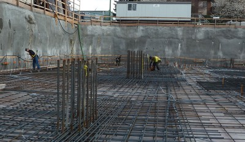

Forjado plano/placa o reticular celulado [LFLS]
Las losas y columnas están construidas sin vigas . A diferencia de las placas planas, las losas planas tienen capitales y / o paneles de colocación en la parte superior de las columnas . (El capital es la porción superior de la columna , que es generalmente de forma cónica y de mayor tamaño en sección transversal de la porción restante de la columna; un panel de gota es una porción engrosada de la losa en el área adyacente a una columna ). Sistemas de bandas de forjado , que consisten en vigas anchas continuas dispuestas entre las columnas, también entran en esta categoría debido a las conexiones viga-columna específicas (click aquí para mayor información). Diseñado principalmente para resistir las cargas de gravedad , estos sistemas poseen una capacidad muy limitada para resistir las fuerzas sísmicas . Si hay numerosas paredesestas deberían considerarse como el sistema resistente a cargas laterales.

Un esquema simplificado de un forjado plano o un reticular celulado (adaptado de: A. Charleson, Seismic Design for Architects, Architectural Press 2008, p64 fig. 5.2)

Sección parcial de una estructura de forjado plano

Diagramas mostrando ejemplos de placas y forjados planos

Sistema de placa plana de concreto reforzado, Eugene, USA (S. Brzev)

Estructura de forjado plano, Canada - note los capiteles en las columnas (S. Brzev)


Sistema de forjado plano de concreto reforzado (note los capiteles de las columnas), Vancouver, Canada (S. Brzev)

Forjado plano de concreto reforzado con columna y capitel, Londres, Reino Unido (S. Brzev)

Forjado plano, Australia - Note los paneles debajo del forjado (A. Charleson)

Sistema de forjado en banda, Canada (S. Brzev)

Un edificio de concreto reforzado con forjados planos con bandas bajo construcción, Kenya (K. Jaiswal)

Forjado plano de concreto reforzado bajo construcción, Canada (S. Brzev)


Garaje de concreto reforzado con forjado plano, USA (S. Brzev)

Este edificio de concreto reforzado tiene un forjado reticular, Vancouver, Canada (S. Brzev)


Un forjado reticular de concreto reforzado, Eugene, USA (S. Brzev)